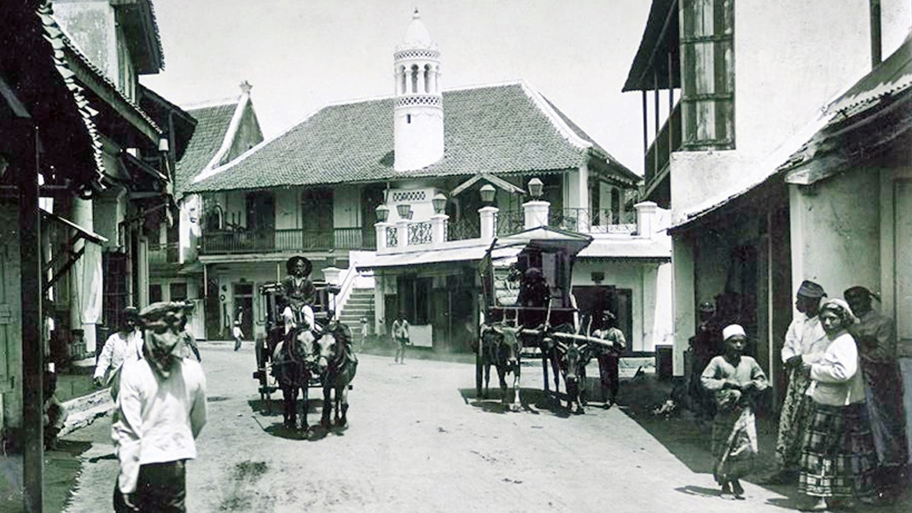

Sejarah

Nama Surabaya berasal dari kata "Suro" yang berarti keberanian dan "Boyo" yang berarti bahaya. Kota
ini dikenal sebagai Kota Pahlawan karena peristiwa heroik pada 10 November 1945, ketika para pejuang
Indonesia mempertahankan kemerdekaan dari serangan pasukan Sekutu.
Sejarah Surabaya yang panjang dimulai dari era Kerajaan Majapahit hingga menjadi salah satu
pelabuhan terpenting di Hindia Belanda. Peran pentingnya dalam perdagangan dan perkembangan industri
menjadikan Surabaya sebagai salah satu kota terbesar di Indonesia.
Geografis
Kota Surabaya terletak di pesisir utara Pulau Jawa, di tepi Selat Madura. Surabaya merupakan pintu
gerbang utama menuju kawasan Indonesia Timur dan terkenal dengan pelabuhan Tanjung Perak yang
merupakan salah satu pelabuhan tersibuk di Indonesia.
Secara geografis, Surabaya memiliki dataran rendah dengan ketinggian rata-rata 5 meter di atas
permukaan laut, yang menjadikannya pusat perdagangan dan industri yang strategis.
Kuliner Khas Surabaya
Rujak Cingur
Rujak Cingur adalah makanan khas Surabaya yang terdiri dari campuran buah, sayuran, dan cingur
(bagian mulut sapi) dengan saus bumbu kacang petis.
Soto Ayam Lamongan
Soto Ayam Lamongan, soto yang terkenal dengan kuah kuningnya yang gurih, disajikan dengan suwiran
ayam, telur, dan perkedel.
Lontong Balap
Lontong Balap adalah makanan berbahan dasar lontong yang disajikan dengan tauge, tahu goreng,
lentho, dan disiram dengan kuah gurih.
Rawon
Rawon adalah sup daging dengan kuah hitam yang khas dari kluwek, disajikan dengan daging sapi
empuk, nasi, dan sambal terasi.